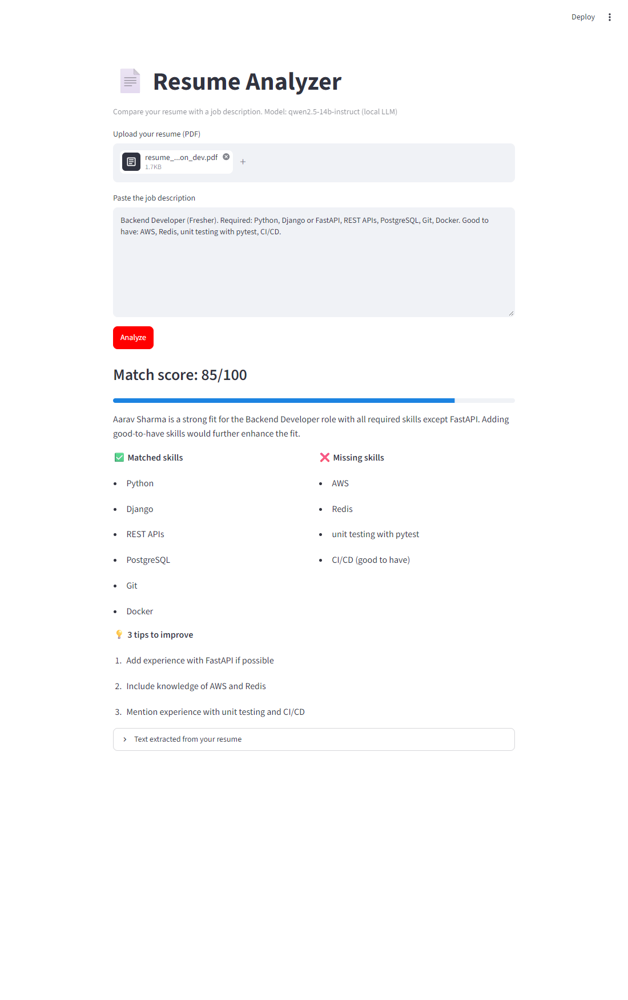
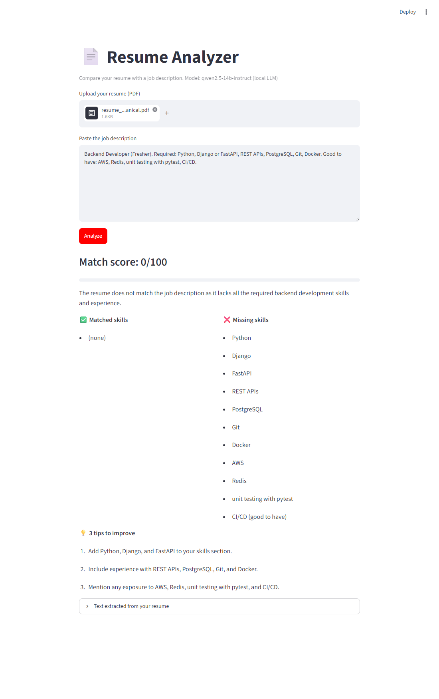

LLM Mini Project PS 41 · Virendra Dilip Mahajan · Roll No 41 · ADT23SOCB1322 · LY Core 4
Students don't know why their resumes get rejected. This app compares a resume with a job description and returns a match score, matched skills, missing skills and 3 tips.
Model: Qwen2.5-14B-Instruct, served with llama.cpp on an NVIDIA RTX PRO 6000 GPU in the MIT ADT Baramati AI lab. Works with any OpenAI-compatible API (Groq, OpenAI, Ollama).


| Resume | Job description | Expected | Score |
|---|---|---|---|
| Python developer | Backend developer | strong | 85 |
| Python developer | Frontend (React) | partial | 30 |
| Data analyst | Data analyst | strong | 85 |
| Data analyst | ML engineer | partial | 65 |
| Mechanical engineer | Backend developer | weak | 0 |
The app is Python (Streamlit), so it runs on your machine, not on this static page:
pip install -r requirements.txt set LLM_BASE_URL=http://localhost:11434/v1 set LLM_MODEL=qwen2.5:14b streamlit run app.py